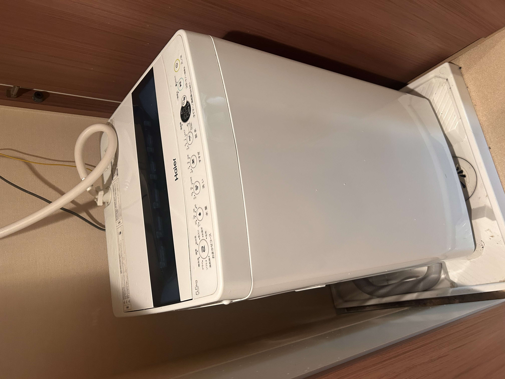
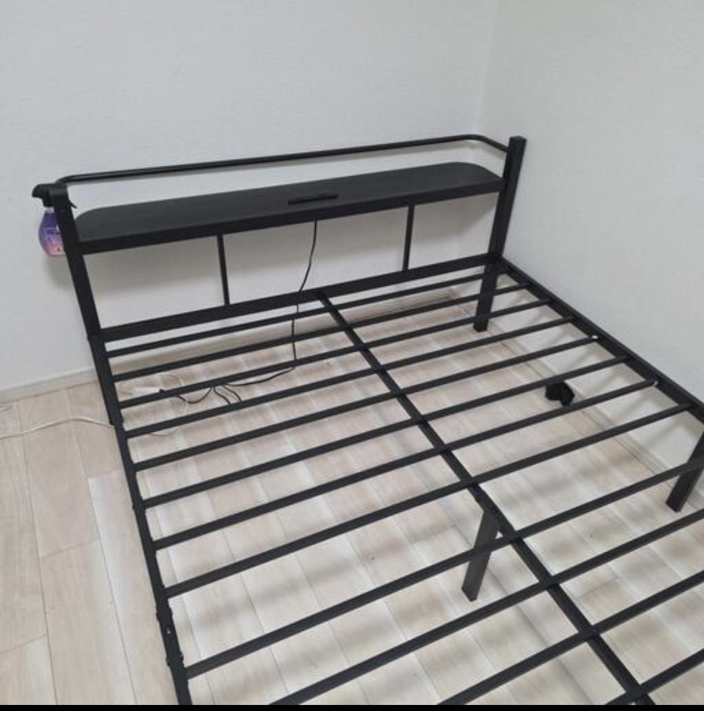
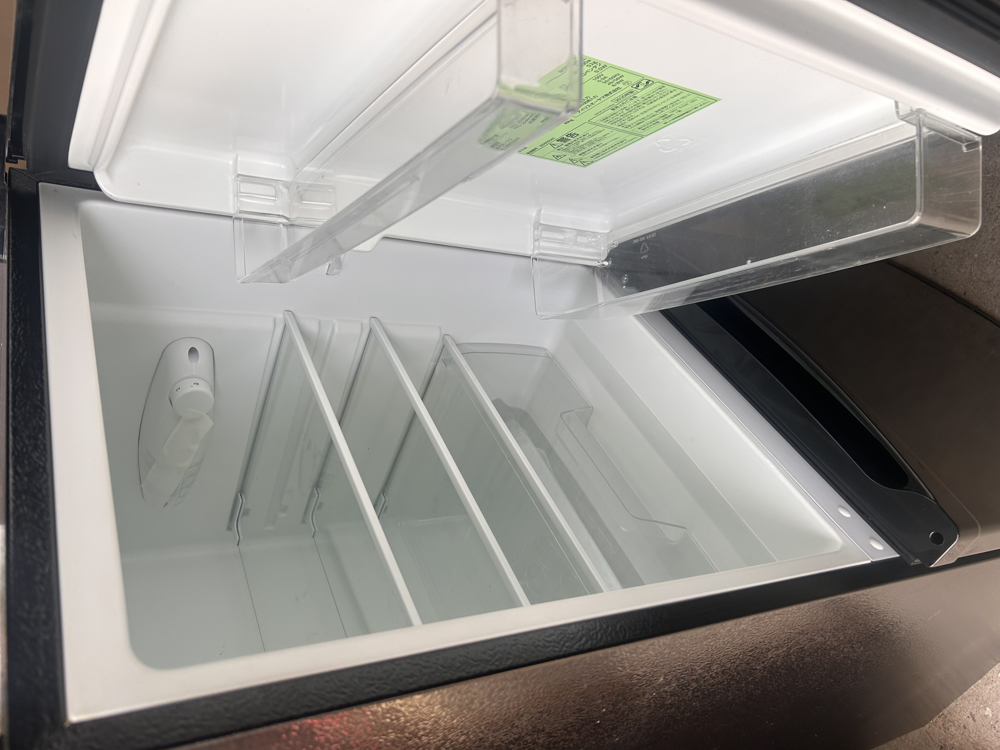
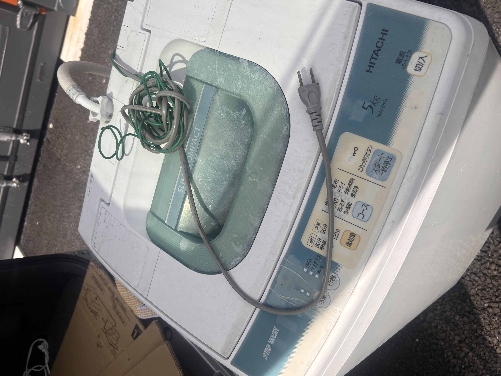
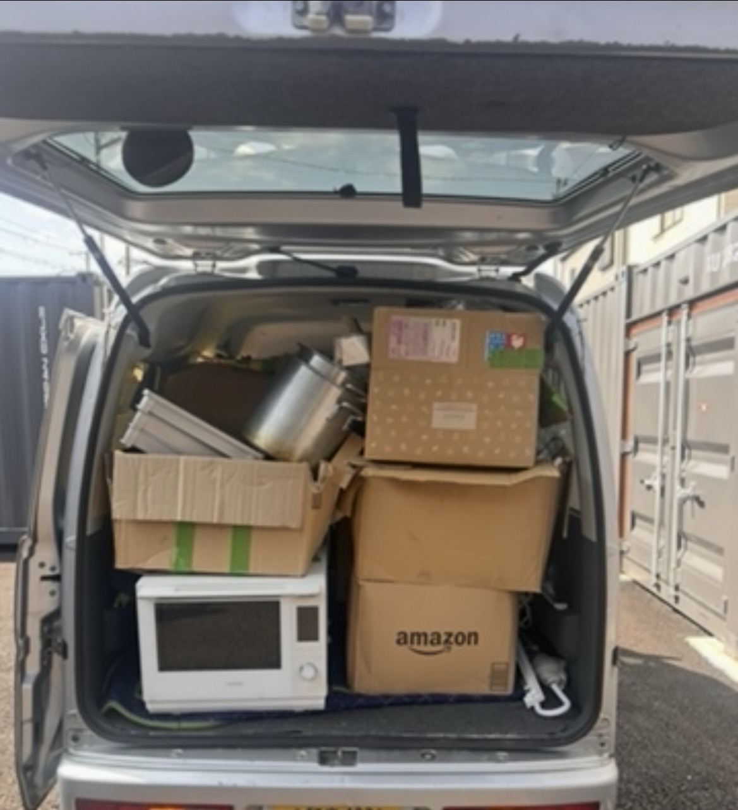
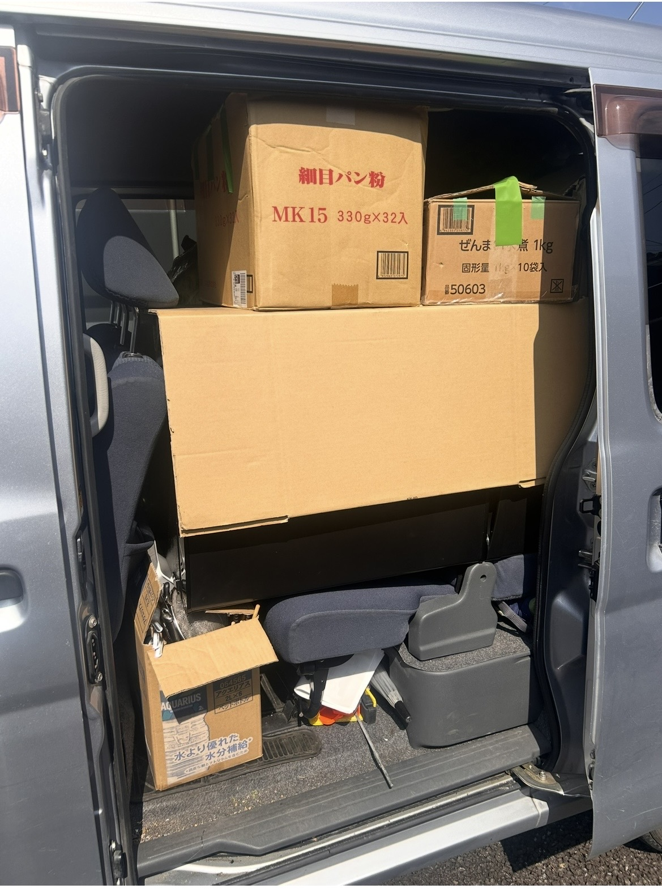
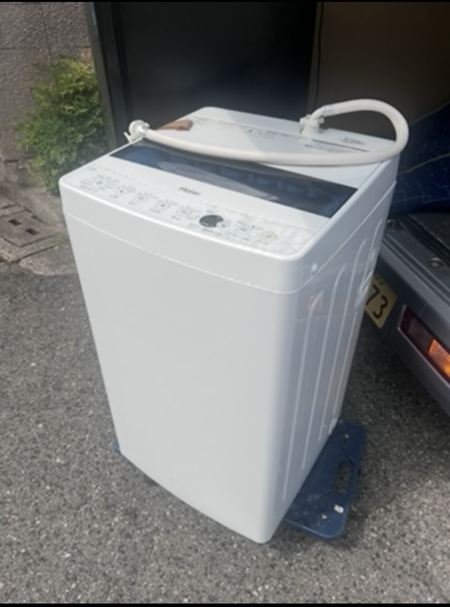

ゴリラサービス
不用品回収・リユース・運搬を通して、まだ使える物を次の人へつなぎます。
子どもたちが田舎をつくる
子どもたちと農家のおじいちゃんが、泉南で畑や自然に触れながら田舎づくりに挑戦します。
資格への挑戦
行政書士・第二種電気工事士など、仕事と地域活動に役立つ資格取得を目指します。
作業実績
🚚 家具・家電の運搬
洗濯機・冷蔵庫・家具などの回収、運搬、設置のお手伝いをしています。
♻️ 不用品回収・リユース
まだ使える物は、できる限り再利用につなげています。
📦 引越し・荷物運び
単身・少量のお引越しや、家具家電の移動にも対応しています。
これまでのご依頼例
🧺 洗濯機のお探し・配送
メーカー・年式などの細かな指定がなく、「使用できる物をできるだけ予算内で」というご相談に対応しました。
過去の対応例：7,000円
♻️ 家具・家電3点のお探し・配送
洗濯機・冷蔵庫・ローチェストを、ご希望条件を確認しながら探し、まとめて配送まで対応しました。
過去の対応例：3点合計 20,000円
📦 家具家電＋近距離1R引越し
家具・家電のお探しと配送に加えて、近距離の1R引越しのお手伝いまでまとめて対応しました。
過去の対応例：一式合計 40,000円
※掲載金額は過去の対応例であり、現在の料金を保証するものではありません。 商品の状態・年式・メーカー・ご希望条件・配送距離・作業内容・在庫状況等により料金は異なります。 リユース品のお探しは、ご希望条件や在庫状況により対応できない場合があります。 商品の状態や条件をご確認・ご了承いただいたうえでご案内します。 正式な料金は作業前にお見積もりします。まずは公式LINEからお気軽にご相談ください。
🔎 お探しの家具・家電、ご相談ください
「一人暮らし用の冷蔵庫が欲しい」 「予算内で使える洗濯機を探してほしい」など、 ご希望をお聞きしてリユース品をお探しします。
メーカー・年式・サイズ・状態・ご予算など、 条件がある場合もまずはお気軽にご相談ください。
※ご希望条件や在庫状況によっては、お探しできない場合があります。 商品の状態・条件をご確認・ご了承いただいたうえでご案内します。
🔎 探してほしい物をLINEで相談する⭐ お客様からの評価
ジモティー評価 23件
😊 良い：23件 😐 普通：0件 😢 悪い：0件
「とても気持ちの良い取引をありがとうございました。
急な時間変更にも快く対応してくださり感謝してます。」
※2026年9月時点の評価
📸 作業実績
実際の回収・運搬・リユース事例の一部をご紹介します。

洗濯機の回収・搬出

ベッドフレームの回収

冷蔵庫の回収・搬出

洗濯機の回収実績

不用品の積込み・運搬

不用品の積込み実績

洗濯機の回収・運搬
💰 料金・サービス目安
不用品1点からご相談OK！写真を送るだけで無料見積もりできます。
🧺 家電・家具の回収
洗濯機・冷蔵庫・ベッド・棚など
🚚 複数点・運搬のご相談
不用品の積込み・運搬などもご相談ください。
📦 リユース可能品
品物の状態によって、買取・無料引取できる場合があります。
📸 写真で無料見積もり
LINEで品物の写真を送るだけ！搬出状況・品物・距離などを確認してお見積もりします。
📍 対応エリア
大阪府・関西エリアを中心に対応しています。
🚚 大阪府内を中心に対応
泉南市・大阪市など、大阪府内各地からご相談いただけます。
🗺️ 関西エリアもご相談OK
大阪府外でも、距離・品物・作業内容によって対応可能です。
📸 対応できるか分からない場合もOK
LINEで地域・品物の写真を送っていただければ確認します。
📋 ご依頼の流れ
お問い合わせから作業完了まで、かんたん5ステップ！
① 📱 LINEで写真を送る
回収・運搬したい品物の写真を公式LINEからお送りください。
② 💰 無料でお見積もり
品物・搬出状況・距離などを確認して料金をご案内します。
③ 📅 日時を相談
ご希望の日程を確認して、作業日時を決定します。
④ 🚚 回収・搬出・運搬
ご指定の場所へ伺い、作業を行います。
⑤ ✅ 作業完了
作業内容をご確認いただいて完了です。
❓ よくある質問
よくいただくご質問をまとめました。
Q. 1点だけでもお願いできますか？
A. はい！洗濯機・家具など、不用品1点からお気軽にご相談ください。
Q. 見積もりだけでも大丈夫ですか？
A. 大丈夫です。LINEで写真を送っていただければ、無料でお見積もりします。
Q. 料金はどうやって決まりますか？
A. 品物・数量・搬出状況・作業内容・距離などを確認してご案内します。
Q. 大阪府外でも対応できますか？
A. はい。距離・品物・作業内容によって対応可能です。まずはLINEでご相談ください。
Q. 買取や無料引取もできますか？
A. 品物の状態や需要によって、買取・無料引取できる場合があります。
💰 料金・サービス目安
品物1点から複数点まで対応しています。まずはお気軽にご相談ください。
🧺 単品回収 にしましょう。
洗濯機・家具・家電など、1点からご相談OK
🚚 複数点・まとめて回収
家具・家電など複数点の回収も対応します。
🏠 運搬・お引越しのお手伝い
家具・家電の搬出・運搬などもご相談ください。
📦 買取・無料引取
品物の状態や需要によって、買取・無料引取できる場合があります。
📸 お見積もり無料
LINEで写真を送っていただければ、内容を確認して料金をご案内します。
⭐ 実際のご依頼例
これまでにご依頼いただいた事例の一部をご紹介します。
🛍️ 洗濯機の調達・お届け
ご希望に合う洗濯機を調達し、ご自宅までお届け
ご依頼料金：7,000円
🚚 家具・家電3点の調達・お届け
洗濯機＋冷蔵庫＋ローチェストを調達し、ご自宅までお届け
ご依頼料金：20,000円
🏠 1Rのお引越しお手伝い
家具・家電の調達＋運搬＋近距離のお引越しサポート
ご依頼料金：40,000円
※料金は品物・数量・調達内容・搬出入状況・距離などによって異なります。
お問い合わせ
不用品回収・リユース・運搬のご相談は、写真を送るだけで無料見積もり！公式LINEからお気軽にご相談ください。
Instagramで相談する 💚 LINEで無料見積もり